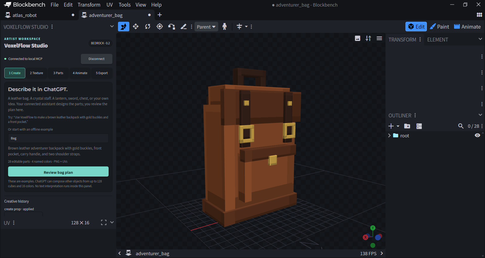

Blockbench desktop 5.2+
The editor for your models, textures, and animation.
Download Blockbench ↗Let’s get your workspace ready. Install VoxelFlow once, connect your editor, and start turning prompts into models you can actually edit.
VoxelFlow works on your computer. Your AI chat is where you describe the model; Blockbench is where it appears. Keep both applications available while you work.
The editor for your models, textures, and animation.
Download Blockbench ↗Runs the included companion. Use a supported LTS release.
Download Node.js ↗Codex, or a ChatGPT desktop account with local plugin support. Your host’s plan and workspace rules apply.
Local plugin documentation ↗The desktop beta includes the plugin and its server dependencies. No npm install or build is needed.
Get the right download ↓What we’ve verified: Windows with Blockbench 5.2.2, local Codex plugin installation, real editor operations, and the extracted package. Complete ChatGPT customer onboarding, macOS/Linux, and Minecraft runtime behavior remain unverified. The public ChatGPT directory listing is not approved or published. Verification details ↗
Just exploring? You can open the editable sample models, or use VoxelFlow’s Bag, Staff, and Robot examples inside Blockbench without an AI account.
Open the GitHub release, expand Assets, and choose voxelflow-desktop-beta-0.3.4.zip. Or use this direct link:
Documents\VoxelFlow.plugins folder and the included .agents folder together. The latter contains the local plugin catalog and may appear hidden.The desktop-beta ZIP is the recommended download. The separate plugin ZIP is for import/submission tooling; GitHub’s automatic “Source code” downloads are aimed at developers. Checksums are available with the release.
plugins/voxelflow-studio/blockbench/voxelflow_studio.jsReview Blockbench’s plugin trust prompt, then open Tools → VoxelFlow Studio. You should see the Create, Texture, Rig, Animate, and Export stages.
Quick local check: choose the Bag example in the Create panel and review its proposal. Applying it should open an editable model. This works before connecting an AI host.
In version 0.3.3 and later, Start VoxelFlow.cmd and Check VoxelFlow.cmd are also available beside START-HERE.md at the top of the extracted desktop folder.
The companion connects your AI host to Blockbench. It runs locally and needs to stay open during your session.
Double-click this file in the extracted folder:
plugins/voxelflow-studio/Start VoxelFlow.cmdKeep its terminal window open. If it reports that node cannot be found, install Node.js 22+ and open a new terminal or restart the launcher.
These platforms have not been verified. With Node.js 22+ installed, open a terminal in the extracted download folder and run:
node plugins/voxelflow-studio/server/bridge-cli.mjs --desktopKeep the process running. The remaining steps still require a compatible Blockbench desktop installation and local AI host. Please report platform-specific problems.
If automatic pairing is missing, run Blockbench and the companion as the same operating-system user, restart the companion, and reopen Connect.
Keep session credentials private. Don’t upload .voxelflow-studio/bridge.json or paste its token into chat or an issue. Restarting the companion rotates the credential, so reconnect Blockbench afterward.
The download contains a local plugin catalog named VoxelFlow desktop beta. Choose the setup path for your host.
This is the documented local marketplace route, but our full ChatGPT installation journey has not yet been tested on a fresh customer account. Client support and workspace administrator policies can affect availability. If the source does not appear, use the tested Codex route or ask for setup help. Official local plugin instructions ↗
If you already use Codex CLI, open a terminal in the extracted VoxelFlow folder and run:
codex plugin marketplace add .
codex plugin add voxelflow-studio@voxelflow-desktop-betaStart a fresh local Codex chat and ask it to use VoxelFlow. The companion and connected Blockbench editor must remain running. You can also register the repository directly:
codex plugin marketplace add KumarManuSaraswat/voxelflow-studio
codex plugin add voxelflow-studio@voxelflow-desktop-betaDirect repository registration still needs the Blockbench plugin and companion from the download.
Before generating a model, ask: “Use VoxelFlow to check whether my Blockbench editor is connected.” Continue only when it reports the actual connected editor.
Select VoxelFlow in your local chat and describe the object. Shape, material, colors, and distinctive details make a useful brief.
Create a Minecraft-style brown leather backpack with two gold buckles, shoulder straps, a carry handle, and a front pocket. Keep the parts editable.

For something different, try a wooden wizard staff with a violet crystal, a lantern, a treasure chest, or a simple sword. General props support up to 128 cubes, 16 named colors, and 32 groups.
Ask: “Change the leather to dark green and keep the buckles gold.” Named recoloring updates the existing model while preserving painted pixels. Every change still needs your approval.
Move, resize, rotate, or paint individual parts with Blockbench’s native tools. Geometry revisions through chat currently create a new model copy. The robot preset additionally supports editable idle, walk, and attack clips; arbitrary creature rigs are not included.
Use Blockbench’s save controls to keep a native .bbmodel file, or include it in a VoxelFlow export.
Validate this model and prepare a Bedrock resource export including the editable Blockbench source.
Review the quality report and export proposal, approve it, then choose a destination in the native Save dialog. A live static-prop export contains geometry, PNG texture, resource definitions, validation and integration notes, and the editable source.
A model asset is the first step toward an in-game item. Inventory registration, wearable attachments, hand/body transforms, gameplay behavior, and Minecraft runtime testing remain separate work. A colored crystal doesn’t emit light, and a modeled staff doesn’t cast spells. See the Bedrock integration notes.
Double-click Check VoxelFlow.cmd beside START-HERE.md in the extracted desktop download. No npm install is needed. It checks Node.js, package files, modeling tools, and the local editor connection without changing your model.
The editor is ready, but that chat lacks local tool access. Enable VoxelFlow in a supported local desktop chat and start a fresh chat. A plugin mention or project name alone does not grant access to your laptop. Ask the assistant to call get_editor_status before creating a model.
Use Blockbench desktop 5.2+, load the built JavaScript file from step 2, then open Tools → VoxelFlow Studio. Check below other sidebar panels if it is docked. The web editor is unsupported.
Start the companion and click Connect in Blockbench. The MCP server alone does not connect the editor. Restart the companion and reconnect if the session credential changed. Keep the companion running.
Confirm that the entire extracted folder, including .agents, is the active local project. Restart the desktop app and inspect its plugin sources. Local plugin support can depend on the client and workspace policy. Complete ChatGPT onboarding remains unverified; the Codex CLI route is tested.
Check whether you already have a VoxelFlow companion window running. Use that session, or stop your previous companion with Ctrl+C before starting another. Don’t stop unrelated processes.
Switch to Blockbench and review the dialog. Only an applied result means the change completed. If the scene changed or the proposal expired, inspect the current scene and ask for a fresh proposal.
Close the companion window or press Ctrl+C. Disable or remove VoxelFlow in your AI host and in Blockbench. Your saved models and exports remain. After uninstalling, you can remove the extracted download folder.
Still stuck? Get installation help with your OS, app versions, steps, and a small example. Remove credentials and personal content from captures.
Try the samples, invent a new prop, or help another artist get started. Share useful prompts and improvements with the project.
Become a contributor ↗